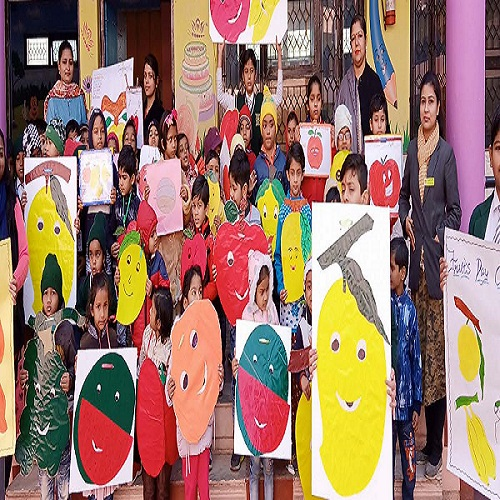

- During school hours- student must be in uniform .Those who do not look neat and tidy will be sent back after assembly.
- Parents & Guardian are not allowed to see their wards during school hours.
- Parents & Guardian are not allowed to interview teachers during school hours without the Permission of principal.
- In all matter the decision of the principal of the will be final.
- Interview with the principal can be held during school hours only fixed time i.e. 10 am to 12 pm on Tuesday, Wednesday, Thursday, and Saturday.
- The child will bring their lunch from the house , No child will be allowed to go home for Lunch.The student will not be provided lunch to them.
- Student should bring a clean table napkin along with their lunch boxes , otherwise they will not allowed to have their lunch.
- No student will allowed to go away from the school during school –hours without a Previous written application from the parents stating reasonable causes.
- No Student is allowed to bring money to school.
- One Educational tour is necessary for all children. Their charges will be paid by the Parents.
- Full co-operation of the parents in all the school activities is solicited.
- Student, who are not punctual for school, will be marked absent .No retest will be held and no position will be given in final exam.
- Student who are not for school,will be marked late in the school register . They Will be communicated to the parents with the term result.
- Student who will come late they will not allowed to enter the school gate without the Permission of principal.
- No T.C. will be issued until all the sums due of the school are settled.